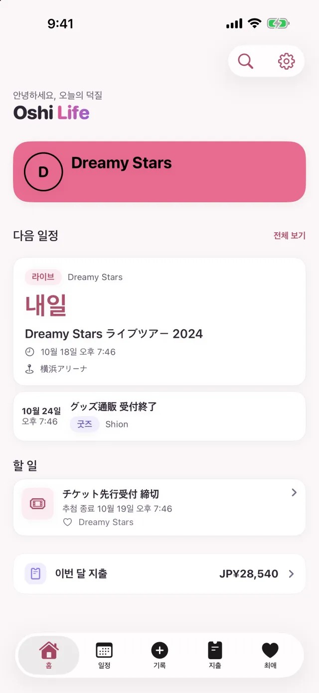
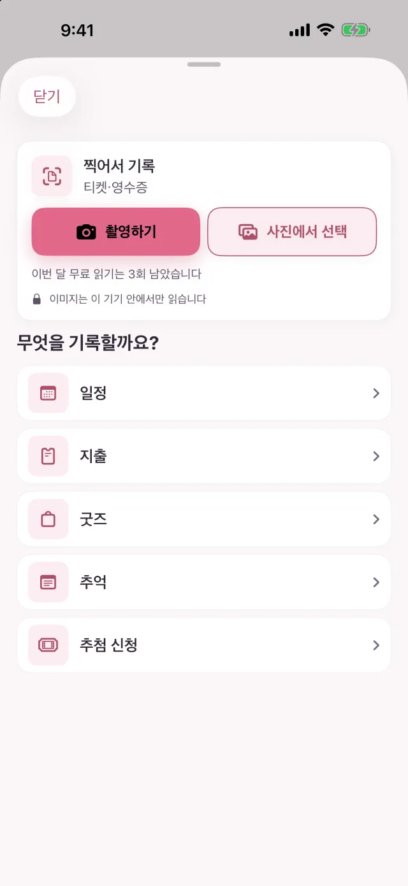
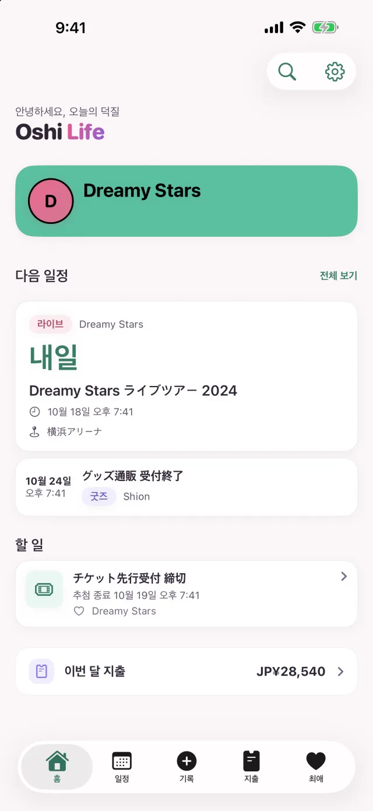
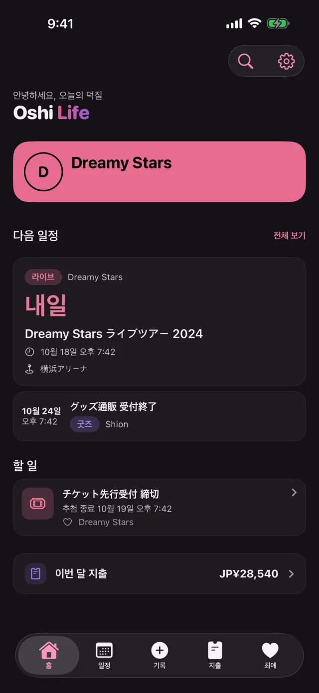
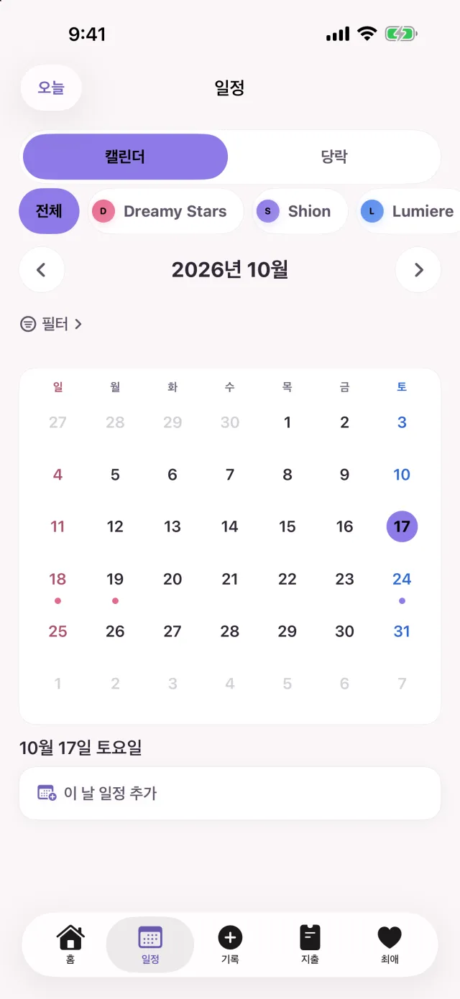
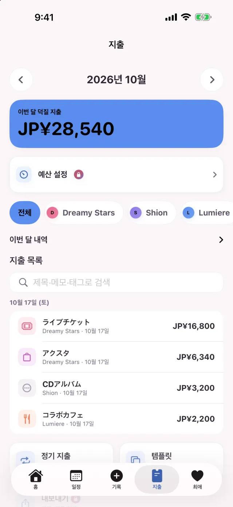
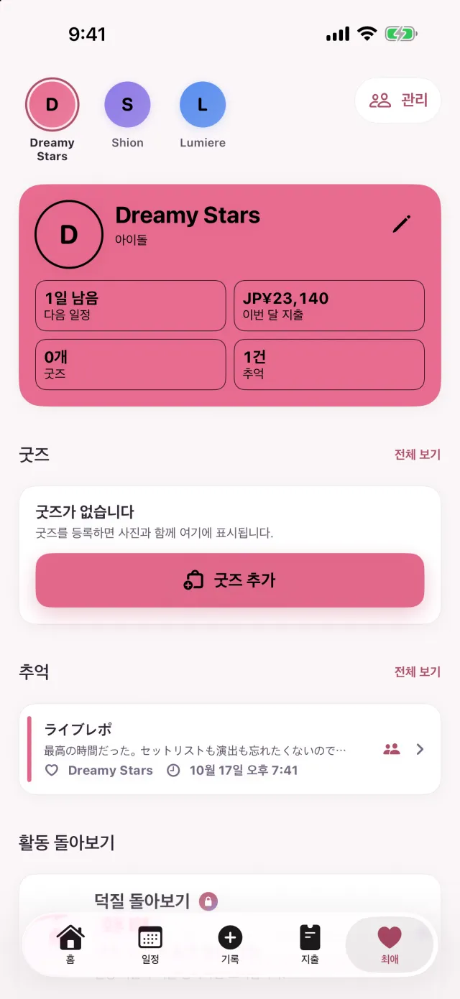

Free
무료로 쓸 수 있는 플랜입니다.
| 최애 | 3명 |
|---|---|
| 일정 | 30건 |
| 지출 | 50건 |
| 추억 | 50건 |
| 굿즈 | 50건 |
| 동시에 진행하는 추첨 신청 | 1건 |
| 찍어서 기록 | 월 3회 |
당첨 보드가 만드는 일정은 일정 수에 들어가지 않습니다. 낙첨된 신청과 입금을 마친 신청은 동시에 진행하는 신청으로 세지 않습니다.
덕질 기록 앱 Oshi Life 2.0
티켓이나 영수증을 찍으면 일정이나 지출, 굿즈의 초안이 만들어집니다. 내용을 확인하고 저장하면, 직접 입력하는 건 고치고 싶은 부분뿐입니다. 신청 마감과 당첨 발표, 최애에게 쓴 돈까지 iPhone 하나로 관리할 수 있습니다.
찍어서 기록은 Free 플랜에서 월 3회까지입니다(티켓과 영수증을 합친 횟수). Premium은 횟수 제한이 없습니다.
무료(앱 내 구입 있음) · iOS 17.0 이상의 iPhone

찍어서 기록
원정에서 돌아와 지갑 속 영수증을 한 장씩 입력하던 일을, 찍어서 내용을 확인하는 일로 바꿉니다.
아크릴 스탠드와 머플러 타월을 산 영수증이라면, 품목마다 굿즈와 지출 기록이 하나씩 만들어집니다. 세금 등 남은 금액은 '기타' 지출로 묶고, 품목을 읽지 못하면 합계를 지출로 기록합니다.
공연명·일시·공연장·좌석·금액을 읽어 일정의 초안을 만듭니다. 금액을 읽었다면 일정을 저장한 뒤 티켓값도 지출로 남길 수 있습니다.
직접 찍는 대신 사진에서 고를 수도 있습니다. 티켓을 영수증으로, 또는 영수증을 티켓으로 잘못 읽었을 때는 같은 이미지를 반대쪽으로 다시 읽을 수 있습니다.
읽기는 iPhone 안에서 이루어집니다. 읽기 위해 이미지나 텍스트를 외부로 보내지 않습니다.
Free 플랜은 월 3회까지입니다(티켓과 영수증을 합친 횟수). Premium은 횟수 제한이 없습니다.

최애의 색과 다크 모드
버튼과 탭, 카드의 강조색이 지금 고른 최애의 색이 됩니다. 핑크 최애라면 핑크로, 민트 최애라면 민트로.
최애마다 색을 골라 두면, 그 최애로 바꿀 때 앱 전체의 색도 함께 바뀝니다.
처음에는 iPhone 설정에 맞춰 바뀝니다. 설정의 '화면 모드'에서 라이트나 다크로 고정할 수도 있습니다.


일정과 당락
추첨에 신청했다면 그 신청을 Oshi Life에도 등록해 두세요. 신청 마감과 당첨 발표, 입금 기한이 일정에 들어가고, 날짜가 다가오면 알림이 옵니다.
신청한 공연과 마감·발표 일시를 입력해 둡니다.
신청 마감·당첨 발표·입금 기한이 자동으로 캘린더에 들어갑니다.
당첨을 기록하고 공연일을 입력하면 공연 일정이 더해집니다.
당락 결과를 기록해 나가면 지금까지의 당첨률을 볼 수 있습니다.
신청 마감과 입금 기한은 전날에, 당첨 발표는 발표 시각에 알려 드립니다.
신청 마감과 입금 기한을 전날에 더해 3일 전과 당일 아침에도 알려 드립니다.
일정 탭 위의 [캘린더 | 당락]에서 '당락'으로 바꾸면, 신청이 '신청 중', '당락 대기', '입금 대기', '참전 준비 완료', '낙첨'으로 나뉘어 나옵니다.
라이브, 발매, 스트리밍, TV, 라디오, YouTube, 굿즈 등. 공연장 이름도 최애 이름도 자유롭게 입력할 수 있습니다.

지출
티켓, 굿즈, 교통비, 숙박, 식비. 기록한 지출은 최애별·카테고리별로 집계되어, 지출 탭에서 달마다 돌아볼 수 있습니다.
합계와 지난달과의 차이, 내역, 목록을 지출 탭의 한 화면에 모았습니다.
자주 쓰는 지출은 템플릿으로 입력할 수 있습니다. 구독료나 회비를 정기 지출로 등록해 두면, 정해진 날짜가 된 건은 자동으로 지출에 기록됩니다.
굿즈를 등록할 때 '지출에도 기록'을 켜 두면 지출 기록도 함께 만들어집니다.
최애가 2명 이상이면 내역과 목록을 최애별로 골라 볼 수 있습니다.
월 예산을 정하면 남은 금액이 홈과 위젯에 나옵니다. 예산의 80%에 이르렀을 때와 넘었을 때 알려 드립니다.

최애
추억에는 사진과 세트리스트를 붙여 남길 수 있습니다. 최애 페이지에는 프로필과 기념일, 굿즈, 추억이 모여 있습니다.
공유하기로 한 추억은 제목과 본문, 세트리스트가 '모두의 리포트'에 올라가 다른 사람도 읽을 수 있습니다. 사진은 공유되지 않습니다.
덕질을 시작한 지 며칠째인지, 생일, 기념일. 이런 날에는 홈에서 축하해 주고, 그날 안이라면 기념 카드를 무료로 만들 수 있습니다. 생일과 기념일에는 아침 9시에 알림이 옵니다.
1년을 정리한 연간 요약 공유 카드는 무료로 만들 수 있습니다.

그 밖에
홈 화면과 잠금 화면, Siri에서도 쓸 수 있습니다.
'최애' 위젯에는 최애의 이미지와 덕질한 지 며칠째인지, 다음 일정까지 남은 날이 나옵니다. '카운트다운'과 '이번 달 덕질 비용' 위젯은 Premium입니다.
공연 시작 6시간 전부터 잠금 화면에 공연 시작까지의 카운트다운이 나옵니다. 지원하는 iPhone에서는 Dynamic Island에도 나옵니다.
일시와 공연장, 교통과 숙소, 준비물을 이미지 한 장으로 정리해 동행자에게 보낼 수 있습니다. 금액은 기본 설정에서는 이미지에 들어가지 않습니다.
Siri나 단축어로 일정을 추가하거나, 다음 일정과 이번 달 지출을 확인할 수 있습니다.
게스트로도 로그인했을 때와 같은 기능을 쓸 수 있습니다. 나중에 Apple이나 Google로 로그인해도 기록은 그대로 이어집니다.
Face ID·Touch ID·암호로 앱을 열 때 잠금을 걸 수 있습니다.
Free와 Premium
Free 플랜은 기록할 수 있는 수에 상한이 있습니다. 상한에 이르러도 지금까지의 기록은 그대로 보고, 고치고, 지울 수 있습니다.
무료로 쓸 수 있는 플랜입니다.
| 최애 | 3명 |
|---|---|
| 일정 | 30건 |
| 지출 | 50건 |
| 추억 | 50건 |
| 굿즈 | 50건 |
| 동시에 진행하는 추첨 신청 | 1건 |
| 찍어서 기록 | 월 3회 |
당첨 보드가 만드는 일정은 일정 수에 들어가지 않습니다. 낙첨된 신청과 입금을 마친 신청은 동시에 진행하는 신청으로 세지 않습니다.
월간 또는 연간 자동 갱신 구독입니다. 가격은 App Store에서 확인해 주세요.
구독은 기간이 끝나기 24시간 전까지 자동 갱신을 끄지 않으면 자동으로 갱신됩니다. 구독 관리와 해지는 구입 후 iPhone 설정에서 할 수 있습니다.
지원
여기에 없는 질문은 페이지 맨 아래의 '문의하기'에서 보내 주세요.
읽기는 iPhone 안에서 이루어지며, 읽기 위해 이미지나 텍스트를 외부로 보내지 않습니다. Premium에서는 지출에 첨부한 영수증과 추억의 사진이 클라우드에도 보관됩니다.
무료로 쓸 수 있습니다. Free 플랜에는 기록할 수 있는 수에 상한이 있습니다(위의 표). 상한에 이르러도 지금까지의 기록은 그대로 보고, 고치고, 지울 수 있습니다.
필요 없습니다. 게스트로도 로그인했을 때와 같은 기능을 쓸 수 있습니다. 나중에 Apple이나 Google로 로그인해도 기록은 그대로 이어집니다.
공유하기로 고른 추억만 '모두의 리포트'에 나옵니다. 공유 여부는 한 건씩 고를 수 있고, 사진은 다른 사람에게 보이지 않습니다.
iOS 17.0 이상의 iPhone에서 쓸 수 있습니다. 언어는 일본어·영어·한국어·중국어(간체·번체)를 지원합니다.